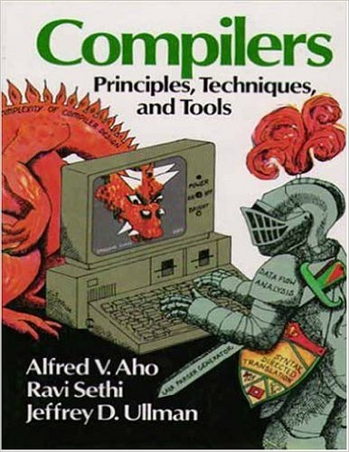
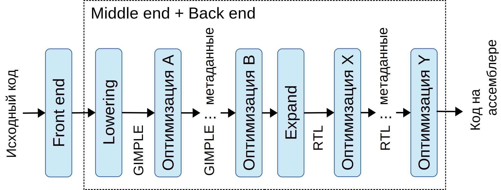

Внутреннее устройство и оптимизации компилятора GCC
Взаимодействие компонентов toolchain-а
Компоненты проекта GCC
- Собственно компиляторы нескольких языков
- Стандартные библиотеки этих языков
- Вспомогательные низкоуровневые библиотеки
- Библиотеки для взаимодействия с компоновщиком и отладчиком
- Инструменты для анализа покрытия кода
- Программа-драйвер
Драйвер
g++ hello.cc get_name.cc ‑o hello
- cc1plus … ‑D_GNU_SOURCE hello.cc … ‑o /tmp/ccEB1OJZ.s
- as ‑‑64 ‑o /tmp/ccl07rju.o /tmp/ccEB1OJZ.s
- cc1plus … ‑D_GNU_SOURCE get_name.cc … ‑o /tmp/ccV8R7Kz.s
- as ‑‑64 ‑o /tmp/cclcWKS5.o /tmp/ccV8R7Kz.s
- collect2 … ‑o hello /tmp/ccaYahDP.o /tmp/cclcWKS5.o ‑lstdc++ …
- ld … ‑o hello /tmp/ccaYahDP.o /tmp/cclcWKS5.o ‑lstdc++ …
На заметку: полезные возможности драйвера
- Выполнить компиляцию, вывести список исполненных команд:
gcc -v main.c other.c … - Вывести список команд, не исполняя их (dry run):
gcc -### main.c other.c …
Компилятор GCC и его архитектура
Задачи компилятора
- Трансляция кода из ЯВУ в язык ассемблера
- Валидация программы, вывод сообщений об ошибках
- Статический анализ, вывод предупреждений
- Оптимизация
- Инструментальная обработка программы (профилирование, динамические проверки)
- Генерация отладочной информации
- Взаимодействие со сторонними программами (система сборки, отладчик, IDE)
Перенастраиваемость
Структура сферического компилятора в вакууме
Front end, промежуточное представление
Задачи фронтэнда
- Разбор программы, семантический анализ
- Валидация и выдача сообщений об ошибках
- Выдача предупреждений
-
Трансляция в промежуточное представление, в т.ч.:
- Генерация служебного кода
- Упрощение конструкций языка
- Сохранение отладочной информации
Разбор, семантический анализ
typedef struct {
uint8_t h;
uint8_t m;
} hh_mm;
bool
first_is_gt(hh_mm a, hh_mm b) {
if (a.h > b.h)
return true;
if (a.h == b.h)
return a.m > b.m;
return false;
}
- stmt
- cond_expr
- gt_expr
- component_ref
- parm_decl a
- field_decl h
- component_ref
- parm_decl b
- field_decl h
- return_expr
- modify_expr
- result_decl D.2143
- integer_cst 1
Подробнее про разбор и семантический анализ
Трансляция
Если в программе не выявлено ошибок, начинается процесс её перевода в промежуточное
представление, которое:
- (почти) не зависит от исходного языка и целевой архитектуры
- удобно для работы оптимизатора
- позволяет выразить типичные инструкции, доступные современным процессорам
Упрощение конструкций языка
На примере языка C++:
- Классы
- Шаблоны
- Лямбда-выражения и замыкания
- Ranged-based циклы
Пример: методы классов
class my_class {
public:
my_class(int a, int b) : m_a(a), m_b(b) { }
int get_sum() { return m_a + m_b; }
private:
int m_a, m_b;
};struct my_class {
int m_a, m_b;
};
void _ZN8my_classC2Eii(struct my_class *this, int a, int b) {
this->m_a = a;
this->m_b = b;
}
int _ZN8my_class7get_sumEv(struct my_class *this) {
return this->m_a + this->m_b;
} Пример: составные выражения
void copy(char *dest, const char *src) {
while (*dest++ = *src++)
;
} void copy(char *dest, const char *src) {
char *dest_tmp, *src_tmp;
do {
dest_tmp = dest;
dest = dest_tmp + 1;
src_tmp = src;
src = src_tmp + 1;
char val = *src;
*dest_tmp = val;
} while (val != 0);
}Области видимости
void foo(int a, int b) {
if (a > b) {
int x = a, y = b;
bar(x, y);
} else {
int a = 1, y = 2;
baz(a, y);
}
}void foo(int a, int b) {
int x, y_1, y_2, a_2;
if (a > b) {
x = a; y_1 = b;
bar(x, y_1);
} else {
a_2 = 1; y_2 = 2;
baz(a, y_2);
}
}Вложенные блоки
void cmp(int a, int b)
{
if (a > b) {
foo(1);
} else {
if (a == b)
foo(0);
else
foo(-1);
}
}
void cmp(int a, int b) {
bb_0:
if (a > b) goto bb_1; else goto bb_2;
bb_1:
foo(1);
goto bb_5;
bb_2:
if (a == b) goto bb_3; else goto bb_4;
bb_3:
foo(0);
goto bb_5;
bb_4:
foo(-1);
bb_5:
return;
}
Циклы
void count(int n) {
for (int i = 0; i < n; i += 5)
foo(i);
}
void count(int n) {
int i;
bb_0:
i = 0;
goto bb_2;
bb_1:
foo(i);
i = i + 5;
bb_2:
if (i < n) goto bb_1; else goto bb_3;
bb_3:
return;
}
SSA: Static Single Assignment
int redundant(int x) {
int y = 10;
y += x;
if (x > 0)
y = 1;
else
y = 2;
return y;
}
SSA: Static Single Assignment
int redundant(int x) {
int y;
bb_0:
y = 10;
y = y + x;
if (x > 0) goto bb_1; else goto bb_2;
bb_1:
y = 1;
goto bb_2;
bb_2:
y = 2;
bb_3:
return y;
}
SSA: Static Single Assignment
int redundant(int x) {
int y_0, y_1, y_2, y_3, y_4;
bb_0:
y_0 = 10;
y_1 = y_0 + x;
if (x > 0) goto bb_1; else goto bb_2;
bb_1:
y_2 = 1;
goto bb_3;
bb_2:
y_3 = 2;
bb_3:
y_4 = φ(y_2, y_3);
return y4;
}
Характеристики промежуточного представления
- Код функции представлен в виде графа потока управления
- Вершины графа (базовые блоки) состоят из линейных списков инструкций
- Все вычисления представлены в виде трёхадресного кода
- Скалярные переменные переведены в SSA-форму
- Типы данных и операции согласуются с наборами инструкций современных процессоров
Вывод промежуточного представления
- Граф потока управления в формате dot:
gcc -c test.c -fdump-tree-cfg-graph - Дамп программы в SSA-форме:
gcc -c test.c -fdump-tree-ssa - SSA-форма а виде графа:
gcc -c test.c -fdump-tree-ssa-graph
Оптимизации компилятора
Понятие оптимизации
Оптимизация, выполняемая компилятором — улучшение (в отличие от понятия оптимизации в математике).
Изначальные источники не оптимальности:- Код, генерируемый макросами или другими программами
- Выбор, сделанный в пользу читаемости, лёгкости поддержки и скорости разработки
- Ограничения языка
Конвейер оптимизатора
- Разные проходы используют (по возможности) общее промежуточное представление
- Конкретный набор проходов зависит от настроек и целевой архитектуры
- Всего проходов около 250
Общие принципы и подходы
- Поиск инвариантов и упрощение кода на их основе
- Удаление избыточных операций
- Перемещение кода для избегания избыточных вычислений
- Дублирование и специализация кода
- Использование знаний об архитектуре процессора для генерации более оптимального кода
- Эвристики: оптимизация более вероятного случая за счёт пессимизации менее вероятного
Классификация оптимизаций
По охватываемой области:
- Локальные (базовый блок)
- Глобальные (функция)
- Межпроцедурные (модуль или программа)
Отдельно можно выделить машинно-зависимые оптимизации, оптимизации циклов и др.
Примеры локальных оптимизаций
- Свёртка полностью константных выражений
- Упрощения, основанные на алгебраических тождествах, например:
- x + 0 x
- 1 && y y
- x - x 0
- Оптимизации последовательностей инструкций процессора по шаблону
DSL для описания тождеств
Richard Biener Unifying GENERIC and GIMPLE folding with a Pattern Description
/* ~~x -> x */
(simplify
(bit_not (bit_not @0))
@0)
/* Simplify sin(x) / tan(x) -> cos(x). */
(simplify
(rdiv (SIN:s @0) (TAN:s @0))
(if (! HONOR_NANS (@0)
&& ! HONOR_INFINITIES (@0))
(COS @0)))
Глобальные оптимизации
Затрагивают сразу несколько базовых блоков (вплоть до функции целиком).
- Распространение констант и копий
- Устранение мёртвого кода
- Устранение избыточных вычислений
- Устранение общих подвыражений
- Перемещение кода
Пример: распространение диапазонов значений
int encode_image(int coeff, image_data *in, output_stream *out) {
if (coeff < 0 || coeff > 100)
return -EINVAL;
return do_encode(coeff, in, out);
}
int encode_image_simple(quality q, image_data *in, output_stream *out) {
int coeff;
switch (q) {
case Q_LOW:
coeff = 50; break;
case Q_MED:
coeff = 75; break;
case Q_HIGH:
coeff = 90; break;
default:
return -EINVAL;
}
return encode_image(coeff, in, out);
}
Пример: распространение диапазонов значений
int encode_image_simple(quality q,
image_data *in,
output_stream *out) {
int coeff;
switch (q) {
case Q_LOW:
coeff = 50; break;
case Q_MED:
coeff = 75; break;
case Q_HIGH:
coeff = 90; break;
default:
return -EINVAL;
}
// coeff: [50, 90]
if (coeff < 0 || coeff > 100)
return -EINVAL;
return do_encode(coeff, in, out);
}
Пример: распространение диапазонов значений
int encode_image_simple(quality q,
image_data *in,
output_stream *out) {
int coeff;
switch (q) {
case Q_LOW:
coeff = 50; break;
case Q_MED:
coeff = 75; break;
case Q_HIGH:
coeff = 90; break;
default:
return -EINVAL;
}
return do_encode(coeff, in, out);
}
Оптимизация циклов
Состоит из несколько фаз (проходов). Анализ циклов включает в себя:
- Нахождение переменной индукции
- Оценку количества итераций цикла
- Анализ зависимости данных
Полученные данные позволяют выполнять преобразования циклов, которые:
- Устраняют избыточные вычисления
- Увеличивают эффективность использования кэша
- Делают возможной векторизацию кода
Пример: размыкание цикла
void unswitch(char *x, int n, bool flag)
{
if (flag) {
for (int i = 0; i < n; i++)
if (flag)
foo(x[i]);
else
bar(x[i]);
} else {
for (int i = 0; i < n; i++)
if (flag)
foo(x[i]);
else
bar(x[i]);
}
}
Пример: размыкание цикла
void unswitch(char *x, int n, bool flag)
{
if (flag) {
for (int i = 0; i < n; i++)
if (true)
foo(x[i]);
else
bar(x[i]);
} else {
for (int i = 0; i < n; i++)
if (false)
foo(x[i]);
else
bar(x[i]);
}
}
Пример: размыкание цикла
void unswitch(char *x, int n,
bool flag)
{
for (int i = 0; i < n; i++)
if (flag)
foo(x[i]);
else
bar(x[i]);
}
void unswitch(char *x, int n,
bool flag)
{
if (flag) {
for (int i = 0; i < n; i++)
foo(x[i]);
} else {
for (int i = 0; i < n; i++)
bar(x[i]);
}
}
Межпроцедурные оптимизации
Распространяют по графу вызовов информацию:
- Константность и диапазоны значений параметров
- (не)использование параметров в функции
- Выравнивание указателей
- Динамические типы объектов
Собранная информация позволяет оптимизировать функцию либо создать несколько версий одной функции, которые лучше поддаются оптимизации.
// test.c
struct point {
int x, y, z;
};
static int
foo(const struct point *p) {
return p->x + p->y;
}
int
bar(int x, int y) {
struct point p = {x, y, 0};
return foo(&p);
}
// После применения оптимизации
// "межпроцедурная скалярная
// замена агрегатов"
static int
foo_isra_0(int p0, int p1) {
return p0 + p1;
}
int
bar(int x, int y) {
return foo_isra_0(x, y);
}
Встраивание
Встраивание (inlining) — замена операции вызова функции телом вызываемой функции.- Основная польза — открывает возможности для других оптимизаций
- Нетривиально влияет на размер программы и работу кэша инструкций
- В языках C и C++ даже есть ключевое слово inline, имеющее косвенное отношение к встраиванию
Встраивание: польза в простейшем случае
static long add2(long *a, long *b) {
return *a + *b;
}
long add3(long *a, long *b, long *c) {
return add2(a, b) + *c;
}
; gcc -c test.c -O -fno-inline
add2: ; rsi = a, rdi = b
mov rax, QWORD PTR [rsi]
add rax, QWORD PTR [rdi]
ret
add3: ; rsi=a, rdi=b, rdx=c
push rbx
mov rbx, rdx
call add2
add rax, QWORD PTR [rbx]
pop rbx
ret
; gcc -c test.c -O
add3: ; rsi=a, rdi=b, rdx=c
mov rax, QWORD PTR [rsi]
add rax, QWORD PTR [rdi]
add rax, QWORD PTR [rdx]
ret
Встраивание и C++
#include <vector>
#include <numeric>
long sum(const std::vector<long>& vec) {
return std::accumulate(vec.begin(), vec.end(), 0L);
}
Эвристики встраивания
Встраивание производится двумя проходами оптимизатора, которые используют разные алгоритмы.
- Ранний этап: граф вызовов обходится в топологическом порядке, основной критерий — размер вызываемой функции.
- Поздний этап: для каждого вызова (ребра в графе) рассчитывается сложная метрика, которая моделирует пользу от встраивания вызова. Используется очередь с приоритетами.
Жаркая дискуссия Линуса Торвальдса и мэйнтейнера GCC на тему эвристик
Back end и машинно-зависимые оптимизации
Каждый back end в GCC включает в себя:- Код (на языке C++), специфичный для компиляции под конкретную архитектуру
- Описание архитектуры (инструкций, регистров и т.д.) на особом DSL
Пример: выбор инструкции для 8-битного деления
Попробуем скомпилировать программу:
uint8_t mod(uint8_t a, uint8_t b) {
return a % b;
}
Описание архитектуры процессора содержит таблицы поддерживаемых стандартных операций. Компилятор попытается найти в них что-нибудь подходящее, например:
- umod
- udivmod
- udiv и вычислить по формуле a - (a/b)
- то же самое, но для типов большей разрядности
В итоге (на x86) удастся найти шаблон udivmod для uint8_t
Выбранный шаблон и реальная инструкция
// Псевдокод шаблона udivmod
void udivmodqi4(uint8_t dividend, uint8_t divisor,
uint8_t *remainder, uint8_t* quotient)
{
*quotient = dividend / divisor;
*remainder = dividend % divisor;
}
// Но в x86 инструкция деления работает несколько иначе.
// Псевдокод шаблона инструкции div для 8-битного делителя
// (с некоторыми допущениями):
void udivmodhiqi3(uint16_t dividend, uint8_t divisor, uint16_t *result)
{
uint16_t quotient = (uint8_t)(dividend / (uint16_t)divisor);
uint16_t remainder = (uint8_t)(dividend % (uint16_t)divisor);
*result = (remainder << 8) | quotient;
}
// Реальная инструкция процессора делает не совсем то, что нам нужно
void udivmodhiqi3(uint16_t dividend, uint8_t divisor, uint16_t *result)
{
uint16_t quotient = (uint8_t)(dividend / (uint16_t)divisor);
uint16_t remainder = (uint8_t)(dividend % (uint16_t)divisor);
*result = (remainder << 8) | quotient;
}
// Напишем адаптер
void udivmodqi4(uint8_t dividend, uint8_t divisor,
uint8_t *remainder, uint8_t* quotient)
{
union {
uint16_t u16;
struct { uint8_t low; uint8_t high; };
} result;
udivmodhiqi3((uint16_t)dividend, divisor, &result.u16);
*remainder = result.high;
*quotient = result.low;
}
Описание инструкции деления в компиляторе
;; Операнд 0 - результат ((remainder << 8) | quotient) ;; Операнд 1 - делимое ;; Операнд 2 - делитель (define_insn "udivmodhiqi3" [(set (match_operand:HI 0 "register_operand" "=a") (ior:HI (ashift:HI (zero_extend:HI (truncate:QI (mod:HI (match_operand:HI 1 "register_operand" "0") (zero_extend:HI (match_operand:QI 2 "nonimmediate_operand" "qm"))))) (const_int 8)) (zero_extend:HI (truncate:QI (div:HI (match_dup 1) (zero_extend:HI (match_dup 2))))))) (clobber (reg:CC FLAGS_REG))] "TARGET_QIMODE_MATH" "div{b}\t%2" [(set_attr "type" "idiv") (set_attr "mode" "QI")])
И так для каждой инструкции...
Примеры машинно-зависимых оптимизаций
- Переупорядочение базовых блоков
- Выделение регистров
- Планирование инструкций
Переупорядочение базовых блоков
#define likely(x) __builtin_expect((x),1)
int foo(int x) {
if (likely(x < 0))
x = bar(x);
else
x = baz(x);
return x + 5;
}
foo: ; edi = x
sub rsp, 8
test edi, edi
jns .L2
call bar
.L3:
add eax, 5
add rsp, 8
ret
.L2:
call baz
jmp .L3
Полезные команды для изучения компилятора
- показать ключи, отвечающие за оптимизацию и их состояния:
gcc -O3 -Q --help=optimizers test.c - показать список активных проходов с оптимизацией -O2:
gcc -fdump-passes -O2 file.c - вывести промежуточное представление после каждого прохода в отдельный файл файл:
gcc ‑fdump‑tree‑all ‑fdump‑ipa‑all ‑fdump‑rtl‑all -O2 file.c
Практическая применимость
The real problem is that programmers have spent far too much time worrying about efficiency in the wrong place and at the wrong times; premature optimization is the root of all evil (or at least most of it) in programming.Donald Ervin Knuth
Влияние оптимизаций компилятора на производительность
Чем может помочь программисту знание устройства компилятора
- Не усложнять код ручной оптимизацией без необходимости
- Уметь оптимизировать критичные участки кода (в том числе, используя
возможности компилятора)
Agner Fog Optimizing software in C++
Разработчики GCC и пользователи
Корпоративные разработчики GCC
- Front end языка C++ и его стандартная библиотека
- Предупреждения компилятора (C, C++)
- Генерация отладочной информации
- Оптимизации
Корпоративные разработчики GCC
Поддержкой back-end компонентов обычно занимаются разработчики железа:
Языки Go и Ada также поддерживаются крупными компаниями:

Сообщество разработчиков GCC
- Списки рассылки (gcc-help)
- Баг-трекер
- GCC Wiki
- Тэг на Stack Overflow
Тестирование GCC — взаимовыгодное сотрудничество
GCC Testing EffortsПопробуйте использовать для сборки вашего кода еженедельные снэпшоты GCC (и прогонять unit-тесты).
Взамен за потраченные усилия вы:- раньше получите доступ к новым предупреждениям компилятора
- сможете указать на ошибку, которая проявляется именно на вашем коде (и рассчитывать на её исправление до релиза)
- отслеживать регрессии в производительности генерируемого кода
Примеры из нашей работы
- PR 65071 Использование sizeof... в типе возвращаемого значения в некоторых случаях приводит к внутренней ошибке компилятора
- PR 66572 Wlogical-op даёт ложноположительные срабатывания из-за шаблонов
- PR 65876 Внутренняя ошибка компилятора связанная с constexpr-инициализацией
- PR 67694 Внутренняя ошибка компилятора при возврате объявленного, но не определённого enum-а (Objective C)
- PR 67854 Отсутствует предупреждение при передаче bool в качестве va_arg
Дополнительные источники информации
Темы, которые пришлось обойти стороной
- Реализация ABI, исключения C++
- Как SSA уживается с указателями (анализ псевдонимов)
- Роль неопределённого поведения в оптимизации
- Математические основы: доминаторы в графах, решётки сбора
- Машинно-зависимые оптимизации: распределение регистров, планирование инструкций
- Модель памяти, атомарные операции, многопоточность
- Оптимизация времени компоновки (LTO)
- Работа sanitizer-ов и анализа покрытия
Литература и доклады о компиляторах
- Рецензии на книги составленные разработчиками GCC
- Robert Morgan. Building an Optimizing compiler (1998)
- Chandler Carruth. Understanding Compiler Optimization
- Chandler Carruth. Tuning C++: Benchmarks, and CPUs, and Compilers! Oh My!
Подробнее об устройстве GCC
- GNU Compiler Collection (GCC) Internals
- IIT Bombay. Essential Abstractions in GCC (2012) — курс из 12 видео лекций
- David Malcolm. GCC for New Contributors
Бонус
Новые фичи GCC, над которыми ведётся работа
- Модули C++
- Поддержка языка D
- Больше отладочной информации для оптимизированных программ
- Противодействие атакам Stack Clash
- Более понятные сообщения об ошибках и больше fix-it подсказок
- Более качественная оптимизация конструкции switch
- Улучшения оптимизаций циклов и векторизации
- Language Server (возможно когда-нибудь)
- Поддержка новых возможностей процессоров Intel (CET) и ARM (SVE)